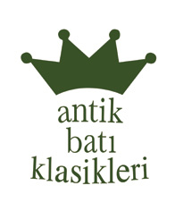

BUDALA
DOSTOYEVSKİ

LACİVERT YAYINCILIK SAN. VE TİC. LTD. ŞTİ.
Antik Dünya Klasikleri: 96
Batı Klasikleri Dizisi: 61
ISBN
978-9944-184-83-0
E-ISBN
İrtibat için:
Cağaloğlu, Alemdar Mah.
Alayköşkü Cad. No: 5 Kat: 2
Fatih / İstanbul
Yazışma: P.K. 50 Sirkeci / İstanbul
Telefon: (0212) 511 24 24
Faks: (0212) 512 40 00
Kültür Bakanlığı Yayıncılık
Sertifika No: 12366
YAYIN HAKLARI
© Eserin her hakkı anlaşmalı olarak
Timaş Basım Ticaret ve Sanayi Anonim Şirketi’ne aittir.